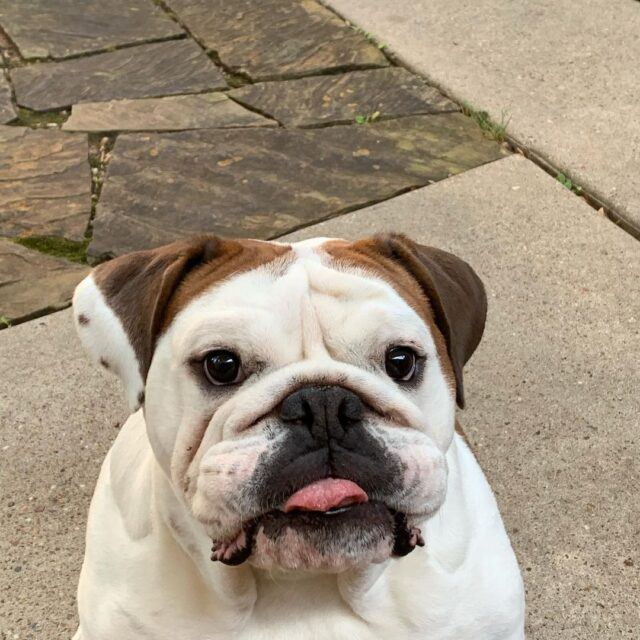
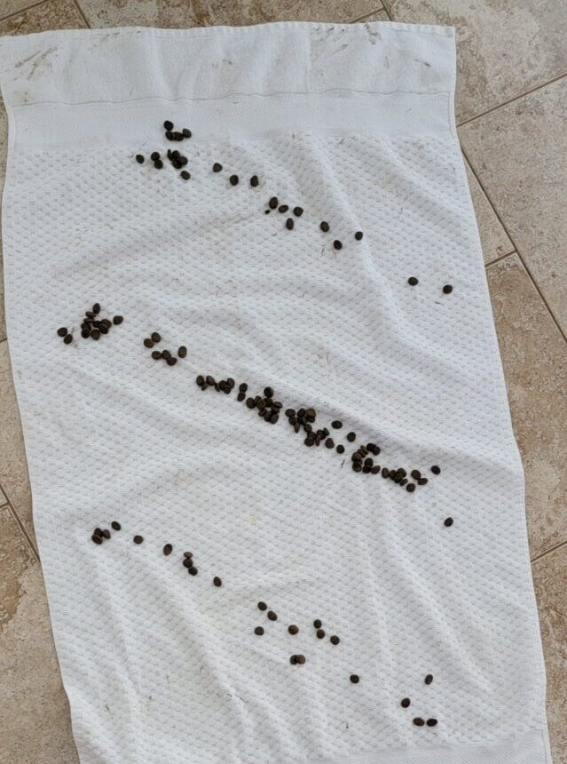
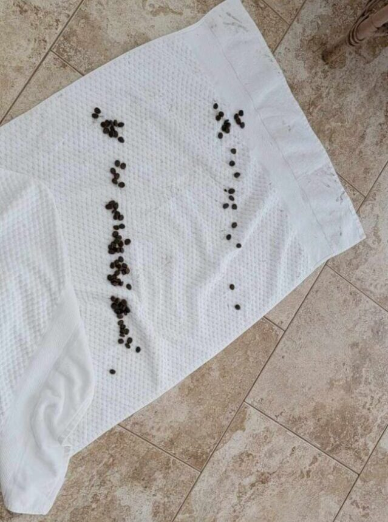

We love spoiling our dogs with toys, but shopping for a picky dog can be hit-and-miss. Some toys sit unused at the bottom of the toy bin and others last only a few moments before they're strewn around your house. Your pup needs the entertainment and exercise, but we don't always want to rush out the moment they get bored or tear apart the toys they already have.
This super cool, quick, simple, and safe DIY trick is proof that you can create fun for your pup without reaching into your wallet or making yet another trip to the pet supply store. All you need is a towel and a little food. See good boy Gus demonstrate for how much fun this game can be:
Lay a towel out and sprinkle your pup’s dry food on top. Try to scatter it. Your dog may like hitting the kibble jackpot by finding it all in one place, but the game will last a lot longer if you can spread it around.
Begin rolling or folding the towel with the food inside. The tighter you roll or fold, the more difficult it will be for your dog to find his prize.
Once all the food is in and your towel is rolled up, let your dog find his way to it! Super easy, right?
Towel tipster Lucas let us know that the time it takes your dog to collect all the food depends on how the towel is folded, how experienced your dog is, and how hungry he might be. If your towel is empty after only a few moments, try twisting/folding it up tighter. He sent us this video of Gus trying this trick out for the first time ever. (I love how patient he is waiting for his chance to play!)
Featured Image: YouTubeA few notes:
Don't leave your dog to play unattended - especially if your pup has a taste for towel. Any toy, even those meant to be chewed, can be swallowed or get stuck in your dog's mouth. Your dog really ought to be supervised to avoid choking or eating inedible items.
Kibble is recommended for this game. Treats might be a great motivator, but too many treats can add inches to your dog's waistline. Obesity is a serious problem that can cause your dog a lot of pain and discomfort. If you don't feed kibble, you can use low-calorie, bite-sized, pet-safe fresh foods. See our list of 20 Fruits & Veggies Your Dog Will Love for ideas! You may want to make this your dog's towel, though, once it's blueberry-and-carrot stained.
For obvious reasons, we don't recommend using wet food. This is a towel.
If you have a breed of dog that is prone to gas (like Gus!), or a pup that is a voracious eater, this might be a good way to get him to slow down. A slower eater takes in less air with his food and will have fewer tummy troubles. Yep. We're talking about farts. Again.
Puzzle games like this can help keep your dog's mind stimulated. If you're stuck indoors on a rainy day or your dog seems bored with the pile of pretty toys you've already bought him, remember this trick and give it a shot. It may not be a walk around the block but it'll keep his mind and his nose sharp.
If you have a breed that loves to dig or burrow, like terriers and Doxies, be sure to give this trick a try. They'll love the chance to paw their way to their prize!